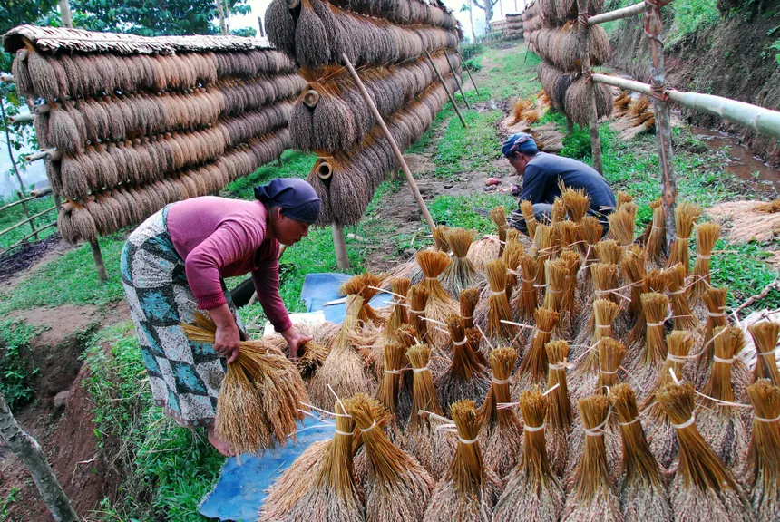
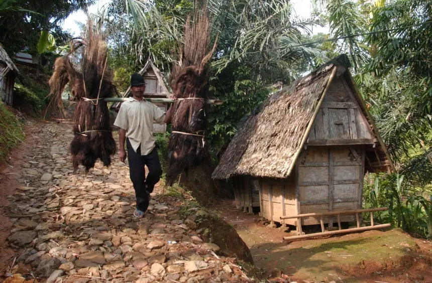

Sejarah Singkat
Kampung Adat Ciptagelar mangrupa salah sahiji kampung adat anu aya di Jawa Barat, tepatna di wilayah Sukabumi. Kampung ieu terkenal ku kaseueuran adat istiadat jeung kabudayaan Sunda anu masih kénéh dijaga tur dilestarikan. Ciptagelar ngagaduhan sajarah panjang anu dimimitian ti abad ka-16, nalika karajaan Sunda masih jaya.
Struktur Organisasi
Kampung Adat Ciptagelar dipingpin ku saurang ketua adat anu katelah Abah. Anjeunna dibantuan ku sababaraha menteri anu ngurus sagala rupa aspék kahirupan di kampung, kayaning menteri pertanian, menteri pendidikan, jeung menteri adat.
- Abah (Ketua Adat)
- Menteri Pertanian
- Menteri Pendidikan
- Menteri Adat
Bangunan Adat
Di Kasepuhan Ciptagelar, aya sababaraha bangunan anu mibanda fungsi khusus, di antarana:
- Leuit Adat: Gudang pikeun nyimpen padi hasil panén.
- Si Jimat: Tempat anu dijadikeun sarana "koperasi" simpan-pinjam padi anu dikelola ku sesepuh girang.
- Pangkemitan: Pos keamanan warga.
- Pangnyayuran (Pawon Balarea): Dapur umum anu nyayogikeun konsumsi pikeun warga nalika aya kagiatan.
Aturan Kampung
Masyarakat Kasepuhan Ciptagelar ngajaga sababaraha aturan sareng kapamalian anu diwariskeun ti karuhunna, di antarana:
- Larangan ngajual beas: Beas hasil panén teu meunang dijual, tapi disimpen di leuit pikeun konsumsi pribadi sareng komunitas.
- Pantangan ngagiling beas nganggo mesin: Ngagiling beas kudu nganggo cara tradisional
- Pantangan ngaluarkeun beas dina waktu-waktu tertentu: Aya waktos-waktos khusus anu ngabatesan ngaluarkeun beas ti leuit.
Upacara Adat
Kampung Adat Ciptagelar ngayakeun sababaraha upacara adat, di antarana:
- Seren Taun: Upacara syukuran panén padi anu dilaksanakeun unggal taun.
- Nganyaran: Upacara nyiapkeun padi anu anyar dipanén pikeun kahirupan sapopoé.
- Ngaseuk: Upacara nugal atawa nanam padi di lahan kering nganggo aseuk (tongkat lancip).
Agama/Kapercayaan anu Dianutna
Sanajan masyarakat Kasepuhan Ciptagelar sacara formal nganut agama Islam, dina kahirupan sapopoé maranéhna masih ngalaksanakeun tradisi sareng kapercayaan karuhunna (tatali paranti karuhun). Hal ieu katémbong dina upacara-upacara adat sareng ritual anu terus dijaga tur dilestarikeun.
Fakta unik
Sababaraha fakta unik ngeunaan Kampung Adat Ciptagelar:
- Kampung ieu teu ngagunakeun listrik ti PLN, tapi ngagunakeun PLTMH (Pembangkit Listrik Tenaga Mikro Hidro).
- Warga kampung masih ngagunakeun cara tradisional pikeun ngolah hasil tani.
- Kampung Adat Ciptagelar terkenal ku sistem lumbung padina anu disebut leuit.

